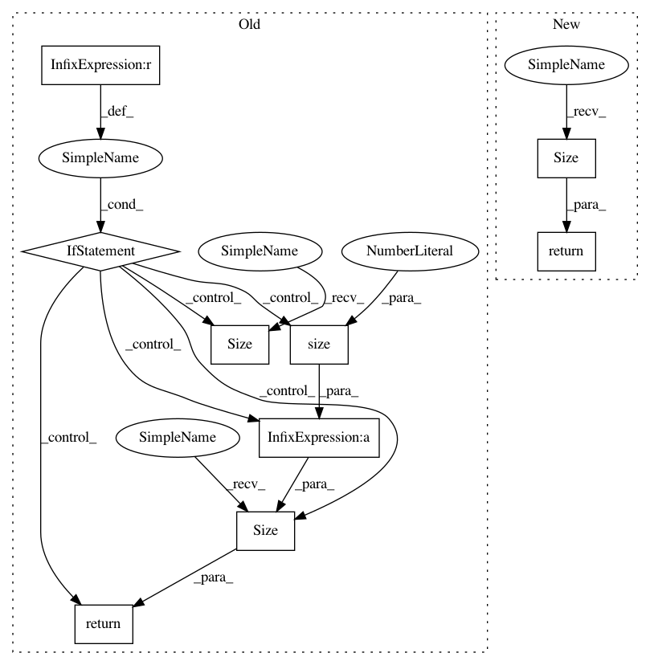

c517e0b8b34a85b8142b4669c152b6e62c02d8e2,gpytorch/lazy/block_diag_lazy_tensor.py,BlockDiagLazyTensor,_size,#BlockDiagLazyTensor#,67
Before Change
def _size(self):
base_size = self.base_lazy_tensor.size()
if self.num_blocks is None:
return torch.Size((base_size[0] * base_size[1], base_size[0] * base_size[2]))
else:
true_batch_size = self.base_lazy_tensor.size(0) // self.num_blocks
return torch.Size((true_batch_size, self.num_blocks * base_size[1], self.num_blocks * base_size[2]))
def _get_indices(self, left_indices, right_indices, *batch_indices):
if self.num_blocks is None:
if settings.debug.on():
assert len(batch_indices) == 0
After Change
shape[-2] *= shape[self.block_dim]
shape[-1] *= shape[self.block_dim]
del shape[self.block_dim]
return torch.Size(shape)
def diag(self):
res = self.base_lazy_tensor.diag().contiguous()
return res.view(*self.batch_shape, self.size(-1))
In pattern: SUPERPATTERN
Frequency: 4
Non-data size: 9
Instances
Project Name: cornellius-gp/gpytorch
Commit Name: c517e0b8b34a85b8142b4669c152b6e62c02d8e2
Time: 2019-03-18
Author: gpleiss@gmail.com
File Name: gpytorch/lazy/block_diag_lazy_tensor.py
Class Name: BlockDiagLazyTensor
Method Name: _size
Project Name: cornellius-gp/gpytorch
Commit Name: 2741c7f1ba7a2d21ee9dfad4905740ff1024d3db
Time: 2019-04-09
Author: jake.gardner@uber.com
File Name: gpytorch/kernels/rbf_kernel_grad.py
Class Name: RBFKernelGrad
Method Name: size
Project Name: cornellius-gp/gpytorch
Commit Name: 6bf26a0ab5c0ea9e332216d1d48d4ce3c03a2f8d
Time: 2019-03-20
Author: jake.gardner@uber.com
File Name: gpytorch/kernels/kernel.py
Class Name: Kernel
Method Name: size
Project Name: cornellius-gp/gpytorch
Commit Name: c517e0b8b34a85b8142b4669c152b6e62c02d8e2
Time: 2019-03-18
Author: gpleiss@gmail.com
File Name: gpytorch/lazy/sum_batch_lazy_tensor.py
Class Name: SumBatchLazyTensor
Method Name: _size